Introduction
This past week, I had the opportunity to remix 3D designs by using two computer-aided design (CAD) programs: TinkerCad and Fusion360. For this project, my definition of remixing a design is by adding one design to another, making it one. While learning about these programs, I also had the chance to create a new 3D design that did not exist on Printables, which caused me to be more creative. Throughout this process, I learned how to quickly prototype a product, simply by sketching it onto a piece of paper. From here, I created two different designs, where one, a koala holding a tennis racket, was remixed on TinkerCad and the other, a dog wearing a top hat, was remixed on Fusion360. After remixing my designs, I exported each as an .stl file, uploaded it to PrusaSlicer, exported the g-code, and printed the design by using the Prusa MINI+ 3D printer.
Sketching
Before remixing my designs onto TinkerCad or Fusion360, I first needed to figure out the object I wanted to create. This is when I decided to sketch two designs: a koala holding a tennis racket and a dog wearing a top hat. 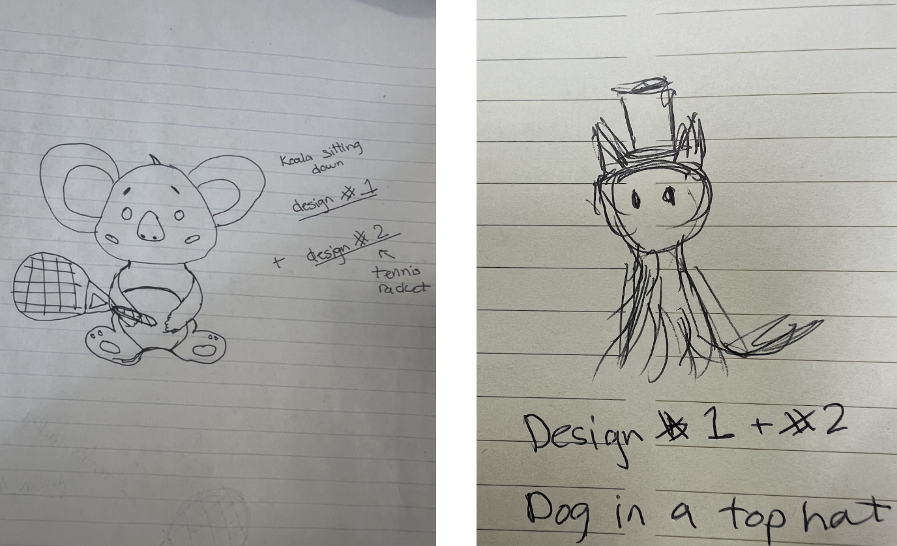
Learning how to use CAD programs
Next, it was time to learn how to use two CAD programs: TinkerCad and Fusion360. Due to the fact that in project 1 I specifically worked with TinkerCad to add a base to a past design, I was fairly comfortable with this program. On the other hand, I had no previous experience with using Fusion360, thus, I had to look for resources (other than Professors Roy and Rogers) to learn the basics of Fusion360. One resource that was provided was tutorials from Autodesk, as it allowed me to learn the basics of Fusion360 and further understand TinkerCad. After this preparation, it was time to remix my designs!
Settings
Similar to project 1, the settings I had on the PrusaSlicer for each final design were as follows:
- Print Settings -> 0.20 Quality (modified)
- Filament -> Prusament PLA (modified)
- Printer -> Original Prusa MINI & MINI+ (modified)
- Infill -> 15%
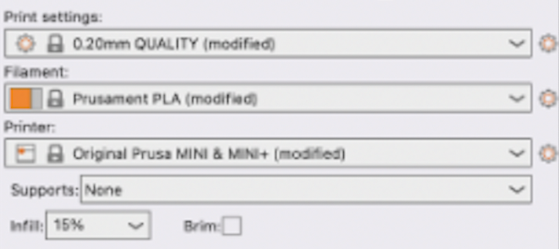
TinkerCad
Due to the fact that I have some prior experience with using TinkerCad to remix a 3D design, I was fairly confident in my abilities to complete this part of the project on my own. Thus, the design that I remixed on TinkerCad was the Koala holding a tennis racket. First, I found a 3D design off the website printables of a Koala and uploaded it to TinkerCad as an .stl file. Next, I found and uploaded a 3D design of a tennis racket as an .stl file onto the same program.
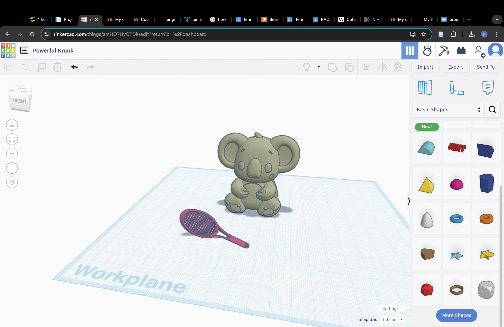After uploading each design onto TinkerCad, I grouped them together.
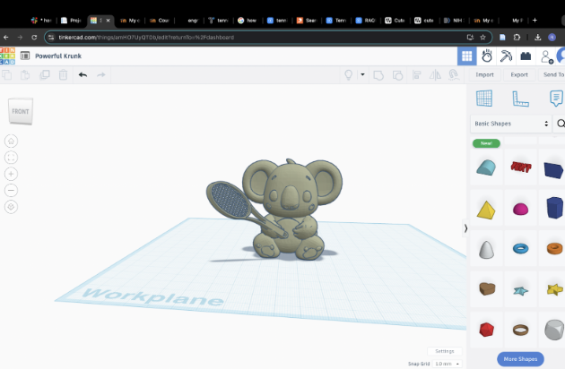Finally, I exported the remixed design as an .stl file onto PrusaSlicer.
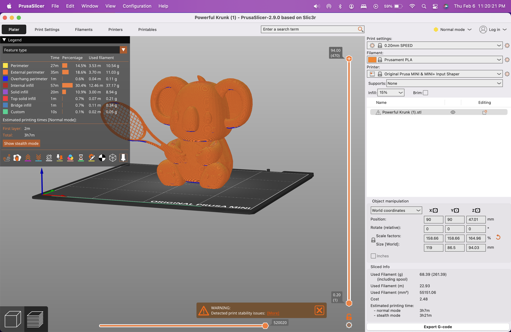After going through how the design would print by using the sidebar, I realized that in order for my print to have a higher possibility of being successful, I needed to add supports, more specifically, organic supports. After realizing this, I changed the settings of PrusaSlicer from Beginner Mode to Normal Mode. I then went to Print Settings > Support Material > Style, then changed the style from “snug” to “organic”.
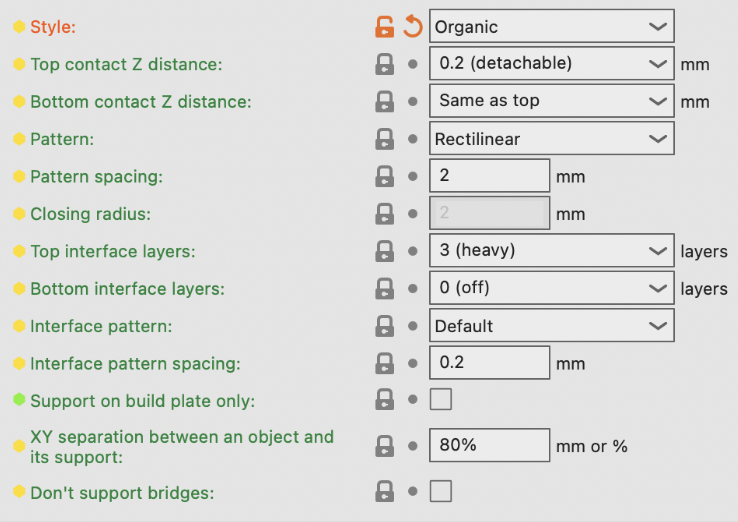After adding the organic supports and changing the support settings to “support on build plate only” this is what my remixed 3D design looked like in PrusaSlicer:
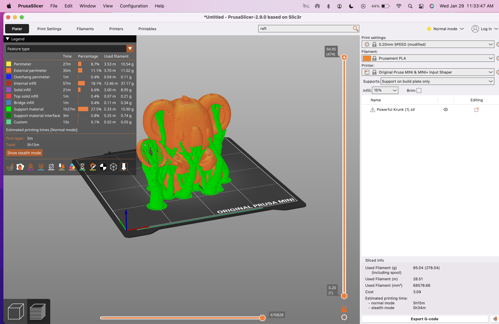
After being satisfied with my organic supports, I decided to slice my design. After being satisfied with the slicing process, it was time to export the g-code onto a USB,
which would then be connected to the Prusa MINI+ 3D printer. Finally, it was time to print the final design!
Here is the final product with and without the organic supports:
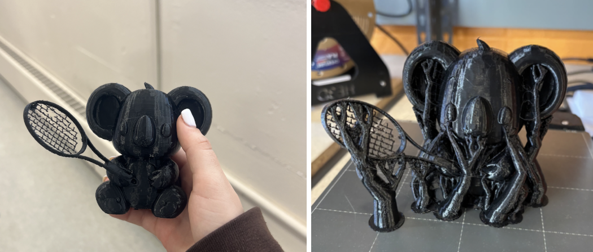
Fusion360
Working with Fusion360 in comparison to TinkerCad was a huge difference. After working with Fusion360, my first initial thought was that this program is meant for someone with a lot of experience
when it comes to 3D printing in general. Thus, I had some challenging moments when I first got started. However, after getting assistance from Professors Roy and Rogers, as well as TA Gianna and the tutorials from Autodesk, learning
how to navigate Fusion360 became a lot easier.
With that being said, after gaining confidence in using Fusion360, I decided to remix my next 3D design, the dog wearing a top hat. The first step to remixing this 3D design was to download two 3D designs from printables as an .stl file.
The first design being a dog sitting down and the other being a top hat.
Similar to the last design, my next step was to group these two designs together. However, before exporting the design as an .stl file on PrusaSlicer, I “meshed” these designs in order to further understand and prepare my final design for the manufacturing phase.
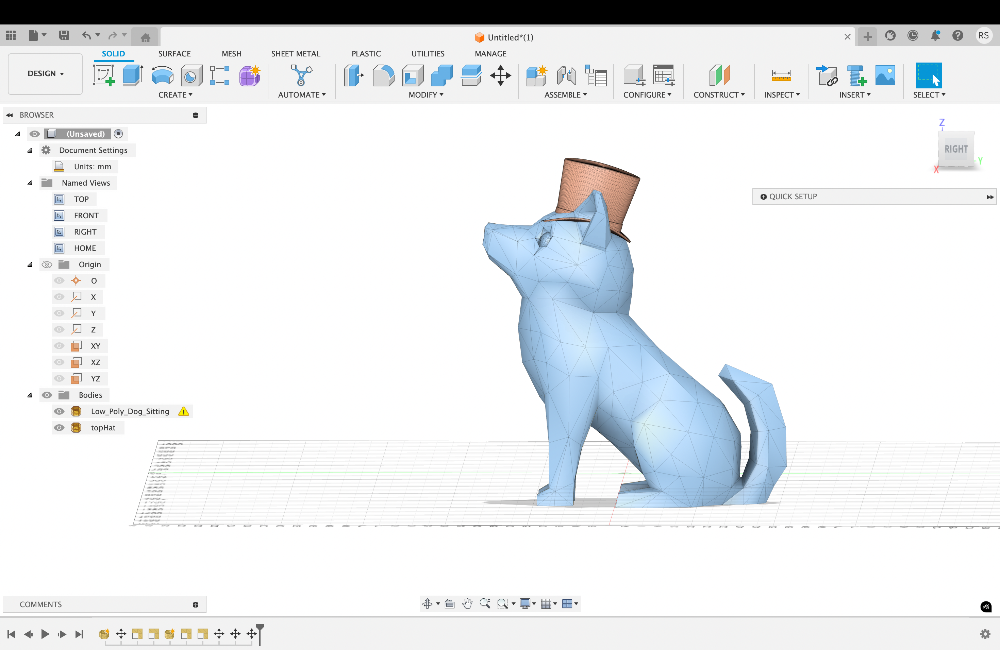After being satisfied with the remixing of these 3D designs, I decided to upload the final design as an .stl file onto PrusaSlicer. Soon after uploading, I realized that it would be beneficial to add some support to the underside of the dog in order to reduce the risk of failure. However, instead of using an “organic” support, I decided to use the “snug”. In addition, I changed the support settings to “support on build plate only”.
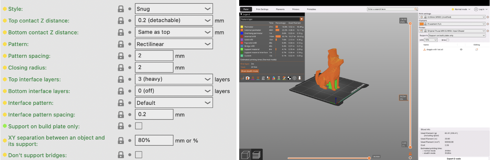Finally, after being satisfied with the slicing process on PrusaSlicer, it was time to export the g-code onto a USB, which would be connected to the Prusa MINI+ 3D printer. After this, it was finally time to print
the final design!
Unfortunately, after I took off the snug supports for this design, I realized I never took a picture. So, here is a photo of the final design without the supports: 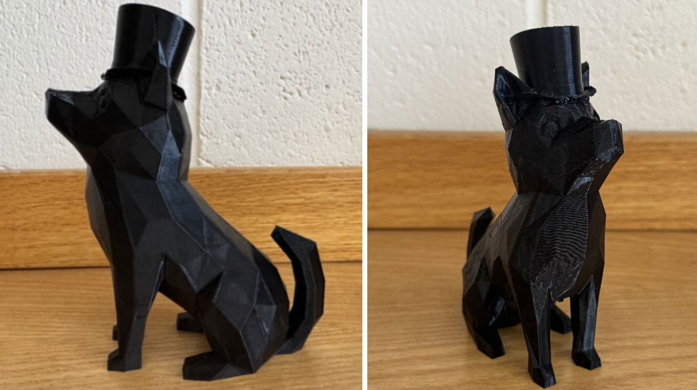
Conclusion
Out of the two CAD programs that I worked with this past week, I can confidently say that I prefer working with TinkerCad when it comes to remixing 3D designs. Due to the fact that I used this program from project
1 in order to implement a base, as well as it being more beginner friendly, TinkerCad was more efficient for me.
One thing I will change for future designs is using “organic” supports instead of “snug” supports. The reason being? Organic supports are much easier to take off! In addition, the other thing I would change would be the thickness of the tennis racket from design #1.
After taking off the organic supports, I noticed that the tennis racket was extremely vulnerable to breaking. Therefore, I believe making the tennis racket a bit thicker would have protected the integrity of the final product.
Overall, I am really happy with the final products of my two designs: the koala holding the tennis racket and the dog wearing a top hat. I definitely feel like I accomplished my goals for this project, which were learning how to use fusion360 and further understand
the ins and outs of TinkerCad. I am also happy with going through the process of learning how to use Fusion360, but after this project, I can for sure say I am #teamTinkerCad!